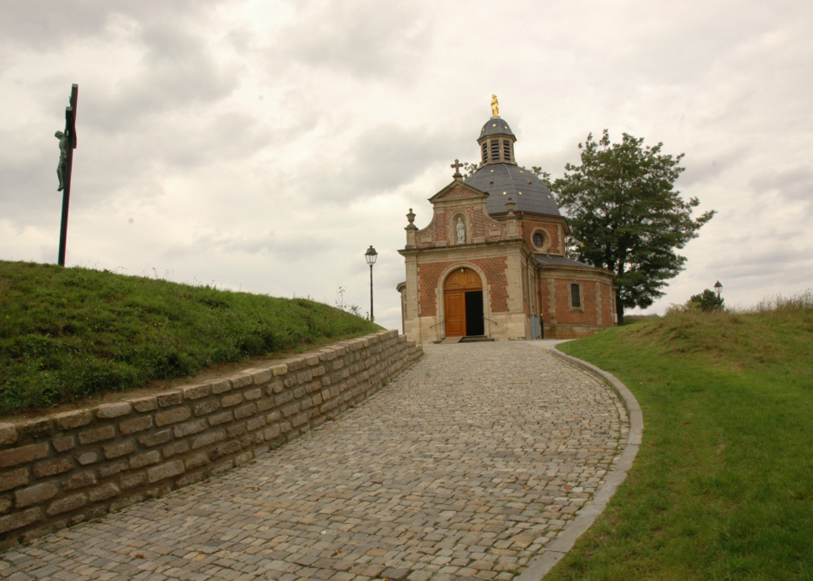

Geschiedenis
Voor het ontstaan van ’t Giesbaargs Muurken moeten we eventjes terugkeren in de tijd. Anno 1989, toen er nog verplichte legerdienst bestond, zochten vele dienstplichtigen ’ s avonds hun vertier in de kantine van de kazerne bij een glaasje bier. Een pintje kostte toen toch al 12 frank( omgerekend 30 eurocent) wat voor een dienstplichtige die maar 120 frank (3 euro) per dag kreeg, een ferme aderlating was. Tweemaal per maand werd er soldij betaald. De eerste 10 dagen kon men daarmee de dorst wel lessen maar de dagen erna zag men veel volk op de kamer. Aldus ontstond in een legerkazerne in Spich (nabij Keulen-Bonn), het idee om op een goedkopere manier aan bier te geraken, nl. door het zelf te brouwen. Met een bierbrouwboek voor de doe-het-zelver in de hand, leerden we aldus de theorie van het bierbrouwen. Om een chemisch probleempje te verduidelijken, vonden we altijd wel een milicien scheikunde om ons te helpen. Aldus werden tijdens de verlofperiodes in België, de eerste bieren gebrouwen. Het genot van creatie en proeven gaf dermate voldoening dat we ook na onze legerdienst bleven brouwen. Na 20 jaar experimenteren vonden we de tijd rijp om bij te scholen , wat de kwaliteit van het bier ten goede kwam. Op aanvraag van vele vrienden, brachten we ons bier in 2011 op de markt. Vanwege de ligging van ons brouwerijtje kozen we de naam ’t Giesbaargs Muurken. Ons brouwerijtje ligt nl. in Geraardsbergen, dichtbij de Dender, met zicht op de abdijstraat, die uitmond aan de alom bekende MUUR VAN GERAARDSBERGEN.
